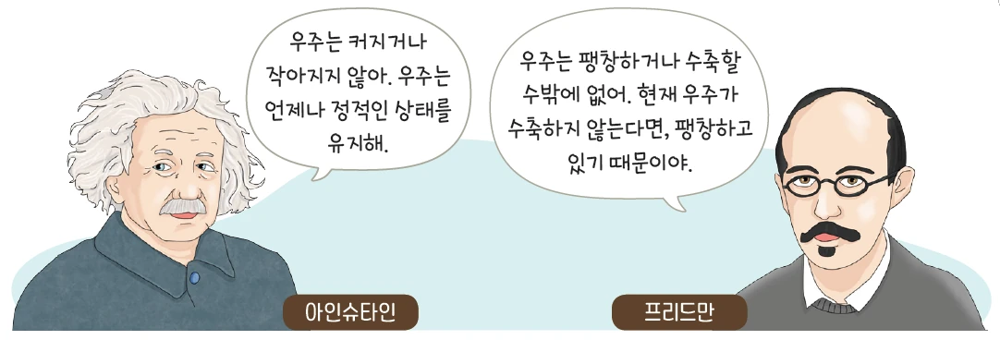
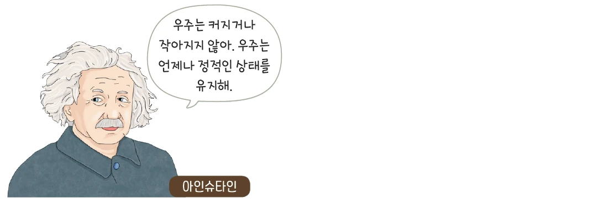

하연샘 지구과학 실험실고등학교 · 지구과학 · 별과 우주
멀리 있는 외부 은하일수록 더 빨리 멀어진다. 외부 은하의 스펙트럼으로 우주가 팽창하고 있다는 것을 확인해 보자.
위의 번호를 누르거나 좌우로 넘기며 차례대로 학습해 보자.
우주가 가만히 있을 수 있을까?


아인슈타인이나 프리드만을 눌러 각자가 생각한 우주를 살펴보자.
아인슈타인 · 정적 우주
20세기 최고의 과학자로 불리는 아인슈타인(Einstein, A., 1879~1955)은 뉴턴처럼 우주가 계속 정적인 상태를 유지한다고 생각했다. 그는 1917년 자신이 유도한 우주 방정식에 ‘우주 상수’를 도입하면서 정적 우주를 제안했다.
우주 상수
아인슈타인은 자신이 유도한 우주 방정식에서 우주는 수축할 수도 있고 팽창할 수도 있음을 알게 되었다. 그는 방정식에 우주 상수를 도입해서 수축도 팽창도 하지 않는 정적 우주를 제안했다. 이후 우주가 팽창한다는 사실이 확인되었고, 아인슈타인은 스스로 정적 우주가 틀렸음을 인정했다.
과거로 거슬러 올라가면 우주는 어떤 모습이었을까?
1927년 르메트르(Lemaître, G. H., 1894~1966)는 빅뱅 우주론을 제안하고 우주 팽창을 나타내는 공식을 유도했다. 그는 팽창하는 우주에서 과거로 거슬러 올라가면 과거의 우주는 현재보다 작았고, 아주 먼 과거에는 우주의 모든 물질이 하나로 모이게 된다고 주장했다. 하지만 정적 우주를 믿었던 당시에는 르메트르의 주장이 인정받지 못했다.
위 칸은 정지 상태의 은하, 아래 칸은 관측한 은하의 스펙트럼이다. 노란 표시는 고유 파장이 약 486 nm인 흡수선이다.
윌슨산천문대에서 외부 은하를 연구하던 허블은 우주 팽창의 근거가 되는 중요한 연구 결과를 얻게 되었다. 그는 멀리 있는 모든 외부 은하들의 스펙트럼에서 흡수선의 위치가 파장이 긴 쪽으로 치우치는 현상을 발견했다. 이러한 현상을 적색 편이라고 하는데, 적색 편이(z)는 다음과 같이 나타낼 수 있다.
한편 외부 은하가 멀어지는 속도를 후퇴 속도라고 하는데, 후퇴 속도가 광속에 비해 상대적으로 작으면 후퇴 속도(v)와 적색 편이의 관계는 다음과 같이 나타낼 수 있다.
허블의 관측 결과에 따르면 외부 은하의 적색 편이는 은하까지의 거리가 멀수록 더 크게 나타났다. 즉 멀리 있는 외부 은하들은 모두 우리은하로부터 멀어지는데, 먼 거리에 있는 은하일수록 더 빨리 멀어지고 있다는 것을 의미한다. 이 관측 결과로부터 팽창 우주론이 옳다는 사실을 인정받게 되었다.
외부 은하의 거리와 후퇴 속도
1929년 허블은 외부 은하들의 거리와 적색 편이를 측정해 외부 은하의 후퇴 속도(V)가 은하까지의 거리(r)에 비례한다는 것을 알아냈다. 이를 허블-르메트르 법칙이라고 하고, 다음과 같이 나타낸다.
최근의 연구에 따르면 허블 상수는 약 70 km/s/Mpc이다. 외부 은하의 후퇴 속도는 스펙트럼의 적색 편이를 이용해 구할 수 있으므로, 허블 상수를 알면 허블-르메트르 법칙으로부터 외부 은하까지의 거리를 구할 수 있다.
우주가 일정한 속도로 계속 팽창했다고 가정하면 허블 상수의 역수는 모든 은하가 한 점으로 모여드는 데 걸리는 시간에 해당하며, 이 값을 허블 시간이라고 한다. 허블 시간은 우주의 나이를 대략적으로 가늠해 보는 근삿값이다.
르메트르는 1927년에 발표한 논문에서 우주의 팽창을 주장했고 은하의 후퇴 속도와 거리 사이의 비례를 나타내는 상수를 제안했는데, 2년 뒤 허블이 관측을 통해 같은 의미의 허블 상수를 제안했다. 두 사람의 업적을 모두 고려해 2018년 국제천문연맹 총회에서 기존의 ‘허블 법칙’을 ‘허블-르메트르 법칙’으로 부르자는 권고안이 통과되었다.
1929년 허블은 46개 은하의 거리와 후퇴 속도를 연관시켜 추세선을 분석했고, 최초로 500 km/s/Mpc의 비례 상수(허블 상수)를 얻었다. 2013년 플랑크 망원경의 정밀한 관측 결과를 바탕으로 구한 허블 상수는 67.8 km/s/Mpc ± 0.77 km/s/Mpc이다. 이 값의 의미는 현재 1 Mpc만큼 떨어져 있는 공간에서 1초마다 약 67.8 km의 새로운 공간이 생기고 있다는 것이다.
생각해 보기
관측 결과, 멀리 있는 외부 은하들은 모두 우리은하로부터 멀어지고 있다. 그렇다면 우리은하는 우주의 중심에 있다고 할 수 있을까? 왼쪽 애니메이션에서 관측 위치를 바꿔 보고, 그렇게 생각한 까닭을 서술해 보자.
모범 답안
우주가 균질하게 팽창한다면 우주의 모든 지점에서 허블-르메트르 법칙이 성립한다. 즉 팽창하는 우주의 어느 곳에서 관측하더라도 멀리 있는 은하일수록 빠르게 멀어지는 것을 확인할 수 있다. 그러므로 모든 은하가 우리은하로부터 멀어지고 있어도 우리은하가 우주의 중심에 있다고는 볼 수 없다.
해 보기
그림은 외부 은하 A~C의 흡수 스펙트럼을 정지 상태의 흡수선 파장과 비교하여 나타낸 것이다. (가) 후퇴 속도가 가장 빠른 은하와 (나) 우리은하로부터 가장 멀리 있는 은하를 각각 쓰시오.
모범 답안
(가) B, (나) B. B는 흡수선이 정지 상태의 파장보다 파장이 긴 쪽으로 가장 많이 이동했으므로(적색 편이가 가장 크므로) 후퇴 속도가 가장 빠르다. 허블-르메트르 법칙에 따라 후퇴 속도가 빠를수록 멀리 있으므로 B가 가장 멀리 있다.
정적 우주와 팽창 우주, 허블-르메트르 법칙과 우주 팽창을 한눈에 정리해 보자.
1정적 우주와 팽창 우주
2허블-르메트르 법칙과 우주 팽창
적색 편이
후퇴 속도
허블-르메트르 법칙
허블 시간
허블-르메트르 법칙과 우주 팽창 연습 문제 (10문제)
하연샘 지구과학 실험실로 돌아가기
그림 속 은하, 스펙트럼, 관측값은 원리를 보여 주기 위한 모형이다.